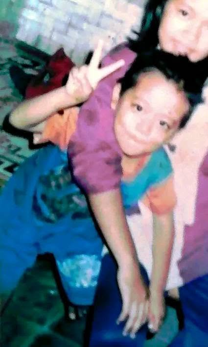
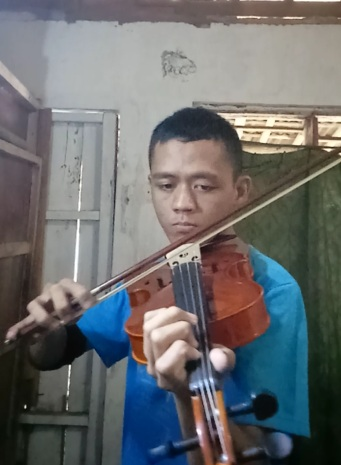
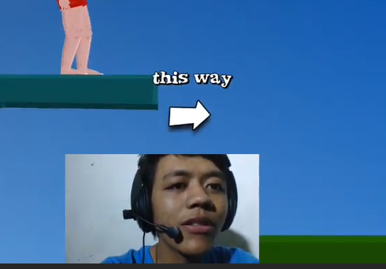
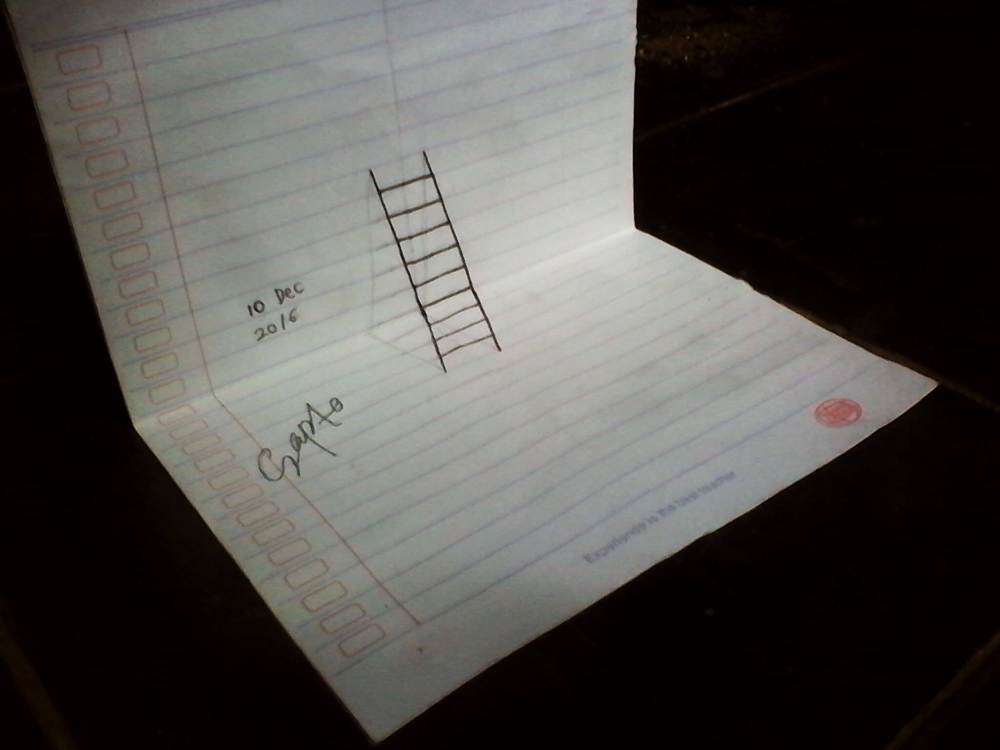
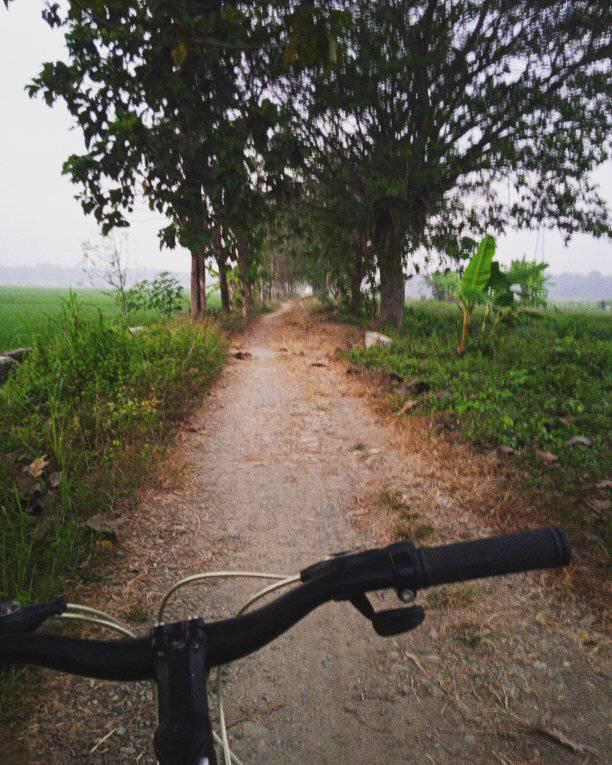
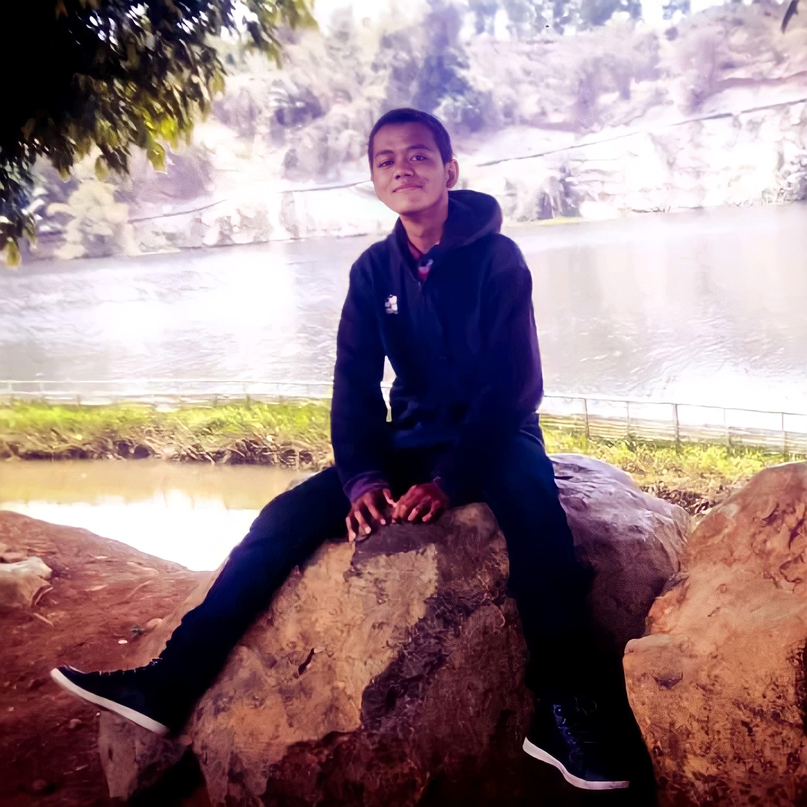
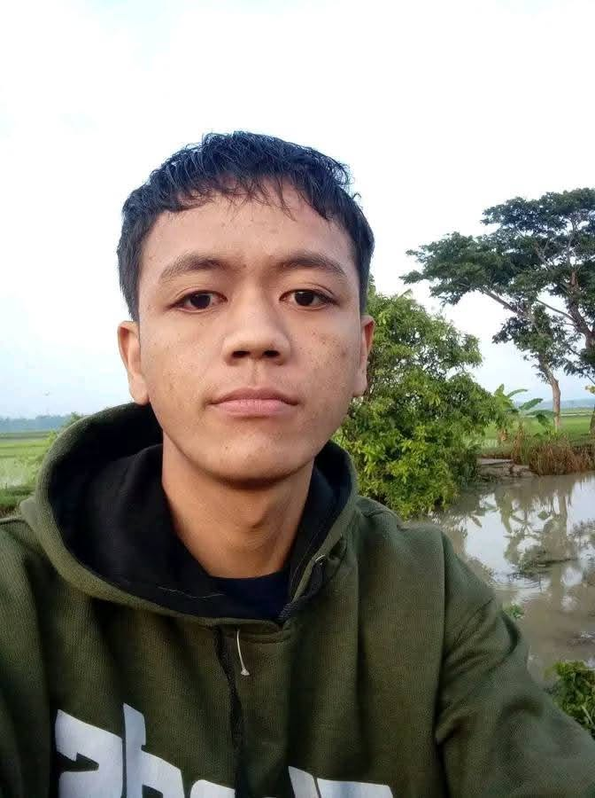

01
CURIOSITY
Kalau sesuatu bikin saya bertanya “gimana cara kerjanya?”, biasanya saya sudah setengah jalan masuk ke rabbit hole baru.
INPUT / rasa penasaran01 Saya Sapto — penjelajah internet, pembuat, perakit ide, pemusik, pebisnis yang pernah jatuh, coder yang kembali pulang, dan manusia yang berkali-kali harus menyusun dirinya dari nol.
SAPTRONAUT bukan portfolio. Ini arsip hidup tentang rasa penasaran: dari website jadul, Blogger, musik, usaha, affiliate, trading dan kehancurannya, sampai AI, coding, SAPCode, dan bab yang belum punya nama.
Foto, benda, karya, dan momen kecil yang pernah menjadi bagian dari perjalanan saya.






Nama saya Sapto. Saya bukan orang yang betah tinggal lama di satu kotak. Sejak kenal internet, pola saya hampir selalu sama: penasaran → bongkar → bikin → tersesat → belajar → pindah orbit.
Saya pernah masuk lewat website dan Blogger, lalu musik, visual, jualan, usaha, affiliate, trading, coding, AI, sampai membangun produk digital. Dari luar kelihatan acak. Dari dalam, semuanya ternyata digerakkan mesin yang sama: rasa ingin tahu dan dorongan untuk menciptakan sesuatu.
Tahun 2025 mengajari saya sisi lain eksplorasi. Ada keputusan impulsif, trading, kerugian, dan fase ketika banyak hal runtuh. Tahun 2026 bukan cerita comeback yang rapi. Ini lebih sederhana: saya mulai membangun lagi. Sedikit demi sedikit. Kembali coding. Membuat SAPCode. Membuat produk. Belajar disiplin. Memilih apa yang layak dibawa ke orbit berikutnya.
SAPTRONAUT adalah museum yang masih hidup. Bukan monumen untuk versi terbaik saya, tapi arsip semua versi: yang penasaran, yang nekat, yang tersesat, yang gagal, yang membangun, dan yang masih terus mencari.

Peta obsesi yang terus berubah. Klik kartu untuk membuka catatan kecil dari kepala saya.
Empat pola yang terus muncul di hampir semua fase hidup saya.
Kalau sesuatu bikin saya bertanya “gimana cara kerjanya?”, biasanya saya sudah setengah jalan masuk ke rabbit hole baru.
INPUT / rasa penasaranSaya punya sisi risk-taker. Kadang membuka pintu. Kadang membakar ruangan. Sekarang tugasnya bukan mematikan keberanian — tapi memberinya sistem.
ENGINE / keberanian + kontrolMusik, website, produk, visual, tulisan. Saya memahami dunia paling baik ketika tangan saya ikut membuat sesuatu.
OUTPUT / karyaSaya pernah kehilangan arah dan mulai lagi. Jadi kemampuan paling personal yang saya punya mungkin bukan “selalu menang”, tapi tahu cara menyusun ulang puing.
PROTOCOL / adapt & rebuildCLICK TO DECODE SIGNAL
signal waiting...
Bukan CV. Cuma beberapa koordinat penting dari perjalanan yang panjang dan kadang absurd.
Dari era website sederhana sampai Blogger: saya belajar bahwa internet bukan cuma tempat untuk dikonsumsi. Ia bisa dibongkar, dimodifikasi, dan dijadikan tempat membangun dunia sendiri.
Gitar, beat, EDM, editing, desain, cerita. Di sini saya menemukan satu kebutuhan yang terus muncul sampai sekarang: ide di kepala rasanya belum selesai sebelum berubah menjadi sesuatu yang bisa dilihat, didengar, atau dipakai.
Jualan, usaha makanan, affiliate, eksperimen produk. Dunia nyata mengajari saya hal yang kode tidak bisa ajarkan: risiko, timing, manusia, uang, dan konsekuensi.
Trading berubah dari eksperimen menjadi lubang. Keputusan impulsif, kerugian, pinjaman, dan kekacauan memaksa saya melihat sisi diri yang selama ini bisa saya hindari. Bukan chapter yang ingin diulang — tapi chapter yang mengubah arah.
Saya kembali ke keyboard. SAPCode, MBTI Test, RPG Tracker, MyJualan, eksperimen AI, website, dan produk digital menjadi batu-batu kecil untuk membangun identitas baru: bukan pemburu jalan pintas, tapi pembuat.
Bukan perusahaan. Bukan jabatan. Bukan niche. SAPTRONAUT lahir sebagai rumah untuk seluruh sisi saya yang tidak mau dipaksa menjadi satu hal.
Saya bukan garis lurus. Saya adalah orbit: kadang menjauh, kadang tersesat, tapi selalu membawa sesuatu pulang.
Teknologi, musik, AI, produk digital, desain, internet, atau rabbit hole yang belum punya nama — kirim transmisi.
Kirim Transmisi